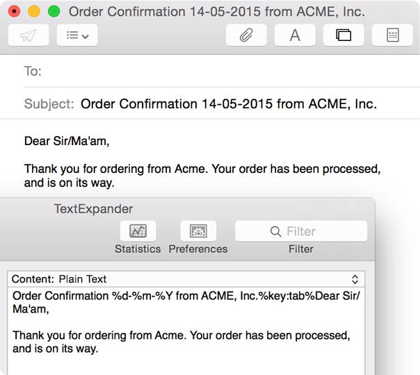

Help: Advanced Snippet Functions: Macros
What is a Macro?
In the context of TextExpander, a macro is a short code that begins with a percent sign (%). That code is like a placeholder for information you want to insert in your snippet, like today's date or someone's name. When a snippet that contains a macro is expanded, that code is replaced by the information you specified.
TextExpander provides several different macro options to choose from. These macros are accessible in the TextExpander window through the Insert menu  located just above the Abbreviation box.
located just above the Abbreviation box.
Note: Since TextExpander uses the percent sign (%) to indicate a macro, it will not appear in the expanded snippet text. In order for it to appear in the expanded snippet, it will need to be doubled (%%). For example, if you want your expanded snippet text to be “50% discount”, enter it as “50%% discount”.
Date / Time Snippets
Insert the current date or time with a snippet. Or use date/time math to add a past or future date/time, e.g. the date five days from now. For a full explanation, see Date, Time, and Math Macros.
Clipboard
%clipboard
Have your clipboard contents included as part of your snippet upon expansion. For example, say you want to customize just one portion of a form letter.
- Create a snippet with content:
- Copy something to the clipboard (Command + C), in this case "Bob".
- Type the snippet abbreviation. It will expand:
Hello %clipboard,
It was a pleasure meeting you! Thank you for coming.
Cheers,
Ann
Hello Bob,
It was a pleasure meeting you! Thank you for coming.
Cheers,
Ann
Fill-in Fields
Inserts custom fields into your snippets that can be filled in while expanding the snippet; useful for form letters, e.g. "Dear ____, Thank you for the ____." For a full explanation of these macros, see Creating and Using Fill-in Fields.
Cursor Position
%| = (Shift + \) Position Cursor Here
Specify where you want the cursor to appear after the snippet is expanded. (The insertion cursor appears at the end of the snippet by default.)
%\ = Select To Here (must appear after %|)
In combination with %|, this specifies a range of text to be selected within the snippet after expansion.
Cursor Movement
%> = cursor right
%< = cursor left
%^ = cursor up
%v = (letter v) cursor down
In cases where your editor might automatically add indenting to your snippet, or for other reasons, you can specify up, down, left and right arrow movements to occur after the expansion, relative to the end of the snippet. These codes must be at the end of the snippet, and TextExpander processes them in reverse order. They cannot be used in combination with %| or %\.
Delimiter Overrides
%+ = keep delimiter
%- = abandon delimiter
These delimiter modifier codes override the Preferences > Expansion > Expand abbreviations setting. These codes must be at the end of the snippet (after Cursor Movement).
Key Presses
%key:tab%
%key:esc%
%key:return%
%key:enter%
Insert the equivalent of the press of a key into a snippet. Available key options are Enter, Escape, Return and Tab. This is useful for web forms where a single snippet can fill in a field, tab to the next field, then submit the form with the Enter key. Also, useful in emails where you want one snippet to fill in the Subject line then tab to the email body and fill it in. That snippet might look like this:

Nested Snippets
%snippet:<snippet abbreviation>%
(where <snippet abbreviation> is the abbreviation assigned to the snippet you would like to nest.)
Nest a snippet within another snippet. For example, you might want to use your telephone number snippet in your email signature snippet. If your telephone number changes, you only need to update one snippet. Here is a telephone number snippet (ttel) nested in an email signature snippet (ssig):
ssig =
Ciao,
Lisa
---
Lisa Newton
Acme, Inc.
lisa@acme.com
%snippet:ttel%
The snippet will expand to this:
Ciao,
Lisa
---
Lisa Newton
Acme, Inc.
lisa@acme.com
1-408-996-1010
Nested snippets also work with AppleScript, Shell Script, and JavaScript Snippets.
© SmileOnMyMac, LLC, dba Smile. All rights reserved.
TextExpander is a registered trademark, Smile and the Smile logo are trademarks of SmileOnMyMac, LLC, dba Smile.